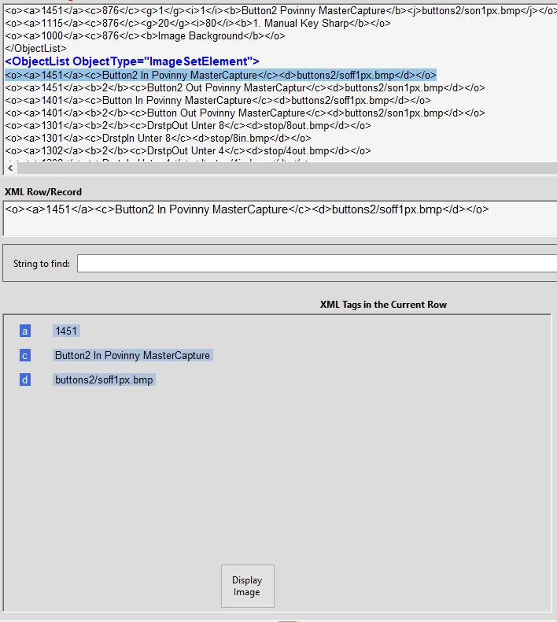

The Tags
Panel displays the Field Tags (Child Elements) found
within a Record-Row: Elements bounded by
'<o>...</o> Start & End-Tags. In alphabetical order,
each Field Tag is displayed, alongside its Value.
Only Tags actually present are displayed, unlike the Trace
Sample function, which displays all
defined Tags, present or not. As AECHO operates on Compressed-ODFs,
the Tags are the short-form versions, '<a>' through
'<z>', '<a1>' through '<z1>'. These Field-name
Tags are presented without their markup-brackets: '<s>My
Value</s>' in the ODF becomes ' s MyValue'
in the Tags Panel. The Panel reserves room for up to 24 Fields in a
Record, presented in 2 columns of 12 each.
When the Record contains a refence to a displayable Image File,
AECHO makes the Display Image
button visible, which if clicked will locate the Image and display
it.
When the Record is a Sample, AECHO makes the Trace
Sample button visible, which will
dispatch the Trace function of the Sample Trace
form, passing that form the SampleID from within the Record.
The first screenshot below shows an example of the Tags Panel when a
Row containing an image reference is selected; the second shows the
behavior whan a Sample Row is selected.

Tags Panel Displaying a
Record that References an Image File